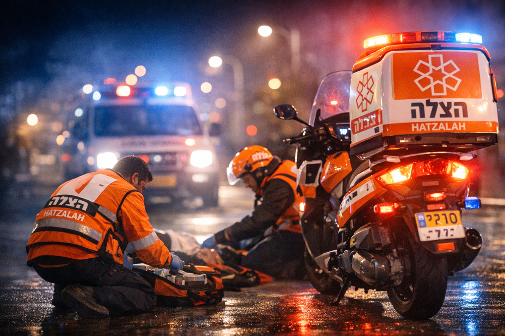

Ambulance
Véhicule essentiel pour stabiliser, traiter et transporter les blessés dans les situations les plus critiques.
200 000 €
Parrainer une ambulanceChaque intervention nécessite des véhicules, du matériel, des équipements et des bénévoles formés prêts à partir sans attendre. En soutenant United Hatzalah, vous financez une chaîne de secours qui sauve des vies chaque jour en Israël.

Vous pouvez soutenir un projet précis : véhicule, équipement, formation ou journée d’intervention. Votre générosité se transforme immédiatement en action concrète sur le terrain.
Véhicule essentiel pour stabiliser, traiter et transporter les blessés dans les situations les plus critiques.
200 000 €
Parrainer une ambulance
Véhicule ultra-rapide permettant aux secouristes d’arriver en quelques secondes au cœur du trafic.
56 000 €
Financer une moto-ambulance
Véhicule médical léger permettant aux secouristes d’arriver vite avec tout le matériel nécessaire.
72 000 €
J'offre ce véhicule
Défibrillateurs, oxygène, sacs de secours et matériel de stabilisation pour agir dès les premières minutes.
5 000 €
Soutenir l’équipement
Soutenez la formation, l’équipement et l’engagement d’un bénévole prêt à intervenir immédiatement.
10 000 €
Parrainer un secouriste
Associez votre soutien à une journée entière d’intervention au mérite ou à la mémoire d’un proche.
18 000 €
Parrainer une journéeCertains produits sauvent des vies de façon immédiate sur le terrain. Ils permettent aux secouristes d’intervenir dans de meilleures conditions et de traiter des urgences vitales dès les premières secondes.

Traitement d’urgence vital pour répondre immédiatement à certaines réactions allergiques graves.
270 €
Soutenir ce produit
Kit essentiel pour une prise en charge rapide et adaptée des nourrissons et enfants en situation critique.
180 €
Soutenir ce produit
Équipement indispensable pour assister rapidement les victimes en détresse respiratoire.
360 €
Soutenir ce produit
Protection indispensable pour permettre aux secouristes d’intervenir dans des zones à haut risque.
1 000 €
Soutenir ce produitVous pouvez également choisir de faire un don libre. Chaque contribution compte et participe directement au financement des secours, des équipements et des interventions d’urgence.
En France, votre soutien à United Hatzalah peut bénéficier d’un avantage fiscal important. Le coût réel de votre don est donc bien inférieur au montant versé.
Pour les personnes concernées par l’IFI, votre soutien à United Hatzalah peut s’inscrire dans une démarche philanthropique forte, utile et fiscalement avantageuse.
Votre soutien permet aux secouristes de United Hatzalah de continuer à intervenir vite, bien équipés et sans attendre lorsqu’une vie bascule.